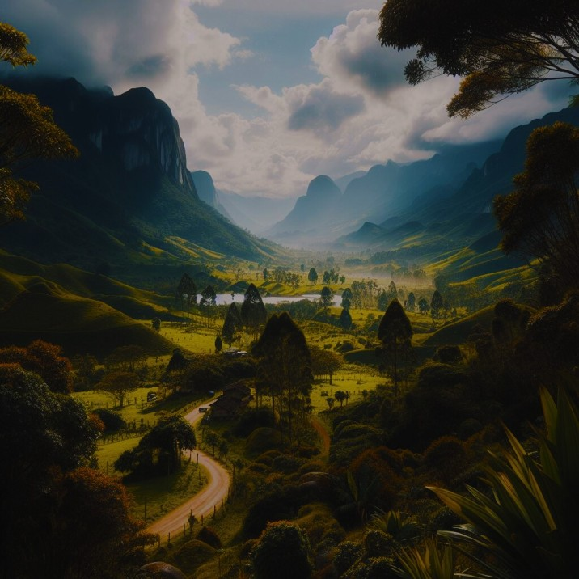
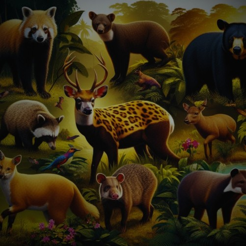
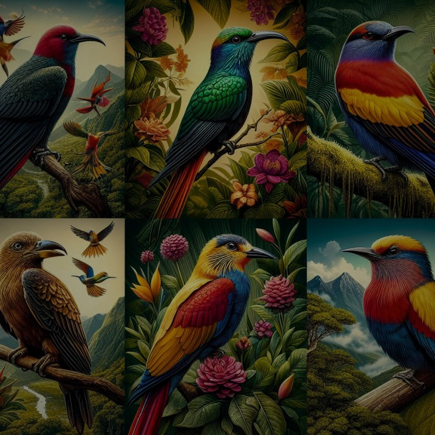

Explora la Biodiversidad y nuestra conservación natural Única de Boyacá:
Biodiversidad Cundi-Boyacense.
Explora la Biodiversidad y nuestra conservación natural Única de Boyacá:
Un Tesoro Natural Colombiano.

